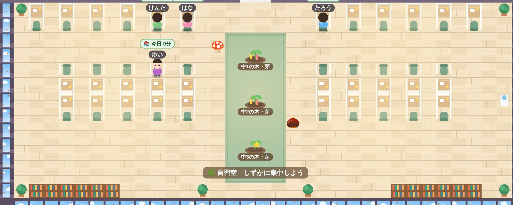
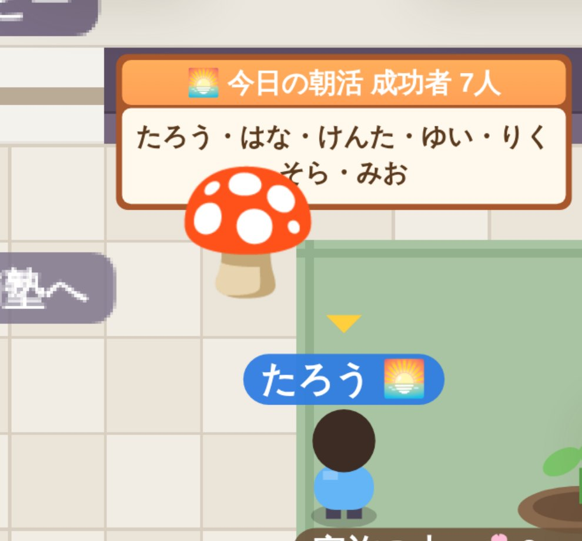

📚 中学生のための
三浦塾オンライン
三浦塾オンライン
攻略本
家での勉強は、部活でいう「自主練」。
みんなと同じ時間に、同じ場所で、自主練を当たり前にしよう。

STEP入室のしかた
1
📱
ログインIDとパスワード（ブラウザでOK）2
📝
漢字テスト中1：5〜4級／中2：4〜3級／中3：3〜準2級3
📸
今日のページ問題集・ノートを開いて撮影（1日1回）4
📚
中学生自習室へ「🏫 へや」で移動5
🪑
すわって開始すわると時間を記録SYSTEMつよくなるしくみ
🔥 連続自習
1日の最低時間をこえた日が続くと🔥がふえる。
| 中1 | 中2 | 中3 |
|---|---|---|
| 45分 | 60分 | 90分 |
授業の曜日・保護者会の日はとぎれない。30日で自分だけのVIP席（金色の名前プレート）！
🎁 ポイント
朝6:00〜7:30・夜19:00〜23:00は10分で1ポイント。時間帯の外も「今日○分」と🔥には入る。
中学生は全アイテム解禁！ よろい・宇宙服・ドラゴン・自習王のトロフィー（1000pt）まで。
🌳 学年の木と短冊
学年の1人あたり平均で、芽→花→実り。競争じゃなく協力。今学期の目標は先生が確認して短冊に、達成で⭐。

🌅 朝活
朝6:00〜7:30に30分で＋3ポイント。ロビーの掲示板に名前がのり、名札に🌅。

🎤 テスト教室
スピーキング・ライティングのテストは「🎤 テストに並ぶ」で順番待ち。待っている間も自習時間になる。

👔 先生・オーナー
1.4倍大きいスーツ姿。近くに来たら💬で質問OK。個別通話は席にいるまま（🎧マーク）。

QUEST季節のクエスト（学年の最低時間をこえた日をあつめる）
🎋 七夕クエスト（1学期）
- 5/1〜5/31（中間）に15日 →
織姫と彦星から手紙と🎋笹かざり - 6/1〜6/30（期末）に15日 →
7/1〜7/20 彦星がついて歩く - 両方クリアで織姫も！
7/7は天の川がかかる🌌
🎅 クリスマスクエスト（2学期）
- 10/1〜10/31（中間）に15日 →
サンタから手紙と🎅サンタ帽 - 11/1〜11/30（期末）に15日 →
12/1〜12/25 サンタがついて歩く - 両方クリアでトナカイも！
12/25は雪とプレゼント🎁
🎎 ひな祭りクエスト（3学期）
- 1/20〜2/28（学年末）にあつめる
- 15日 → おだいりさま・おひなさま
20日 → ＋三人官女
25日 → ＋五人囃子 - 3/1〜3/20 行列がついて歩く
3/3はひなあられ🌸
💡 1か月で15日＝2日に1回より少し多いくらい。学校ごとにテストの日がちがっても大丈夫。画面の左上に「○/15日」。もらったアイテムは「今すぐつける」ですぐつけられる。
RULE中学生自習室のルール
🤫 しずかに集中。生徒どうしの吹き出し・スタンプはなし（先生と話すときだけ）。
📷 見守りカメラ：ランダムな時間に写真が先生だけに届く。保存はしない。
🪑 10秒立ち歩くと席えらびが出る。かならずすわろう。
📱 アプリを閉じる・ほかの画面を見ると時間が止まる。長時間は充電しながら。
🏆 大会（定期テスト）で勝つのは、毎日の自主練を続けた人。今日も1ページから！